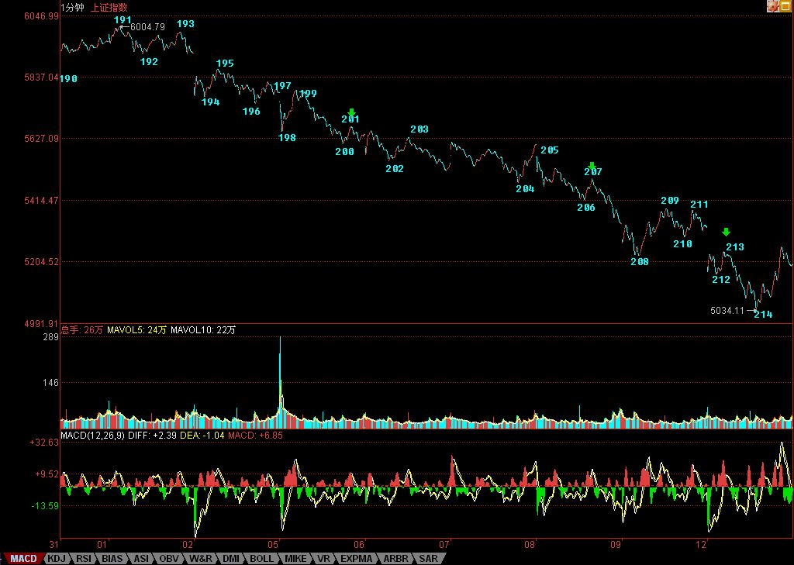

1000点小康跌幅胜利完成
2007/11/12 15:28:57
本ID宣布做空时说，没有1000点的下跌空间，不爽，所以要先拉出空间来。今天，1000点的基本任务已经胜利完成，本ID在前面已经给了这个跌幅一个名字，叫小康水平的跌幅。请问，各位是希望下一步小康就算了，还是要继续富裕下去？
今天，5月均线大埋伏剧本继续演绎，今天的利空，刚好为6004点下来的1分钟下跌构成底背驰做出最后的贡献。本ID已经早说了，6004点下来的1分钟下跌一旦背驰，会出现较大级别反弹。现在，5月均线大埋伏剧本与1分钟下跌背驰剧本最终两剧合一。
注意，这个1分钟下跌，搞出来了三个中枢，然后在今天一个完美的底背驰。最后的一个1分钟中枢的第三类卖点，就是早上的补缺失败走势，然后继续的下跌构成了线段的类背驰，这和1分钟大走势的背驰段构成完美的区间套，这么教科书的走势，请好好去研究。
1分钟底背驰后，最基本的涨幅，就是拉回原来1分钟下跌的最后一个1分钟中枢的波动区间，这个在今天就达到了，后面就是这个中枢如何扩展出5分钟中枢的问题。技术上，就要关注这个5分钟中枢的位置以及后面相应的中枢震荡结果。
通俗地说，如果大家都觉得短线小康就算了，不要富裕了，就让这5分钟中枢第三买点；否则，大家都急切奔向富裕，那这5分钟中枢将第三卖点；事情就这么简单，各位民主一把，投票吧。
更通俗地说，就是以5月均线陷阱对5462-5555点颈线的例行反抽继续展开，注意，反抽可不一定要一定碰到5462上，最弱的反抽，就是装模作样在颈线下面折腾几天，然后就和5月均线吻别于狂乱的夜。
当然，多头现在也不是完全没希望，多头要成功，首先是要让所有人只要小康、不要富裕；其次，好好利用5月均线大埋伏剧本，绝对不让那狂乱的夜发生，特别不能让狂乱的月圆之夜发生；最后，找准机会，重新回到5462-5555点颈线之上站稳。
以上，是多头唯一可以走得通的路，鲁男人说，人走多了，就成了路。多头就从这一刻起，如果要活命，就要不断地到处乱踩，把所有板块都踩一遍，看能不能走出路来。
这句话，通俗的意思就是，反弹如果真能延续，必定以板块轮动的方式，这种方式，好听地说，就是为了聚拢人气，不好听地说，就是忽悠蒙骗点新的站岗者。
特别强调，并不是任何反弹都是任何人有资格玩的。站在本ID理论的角度，这个反弹完全可以就已经结束了，为什么？因为最基本的回抽最后一个中枢的幅度已经达到，所以，现在关键是回来那一下能否构成第二类买点，如果不行，那狂乱的夜的吻别就马上上演，不过，更适当的名称应该叫：刎别。
今天的解盘，写得太长了，主要是有趣版本与通俗版本都写了，本ID经常用自己的语言写，其实只是为了有趣与简练，但这世上无趣的人太多，本ID就受累点，夹带上通俗版本。
下面给出了6004下来的分段，请仔细研究，里面用绿箭头把三个1分钟中枢的第三类卖点都给标记出来了。按照本ID的理论，最晚的逃命点195处，从第1个绿箭头开始的所谓第三类卖点，其实都没什么意义，这里，只是显示，第三类卖点后，市场是可以多么狠。按本ID的理论，从195逃命的，在214才真正开始值得考虑是否回补。当然，前提是你的操作可以接受1分钟级别的，如果是5分钟以上级别的操作，那还是继续睡觉吧。
214，从191开始的1分钟下跌走势的底背驰，对应着三重的区间套定位，最后一重是213-214之间的线段内部笔之间的定位，其中的精确性，教科书一般，关键是你能真明白，并且能当下去把握。
好好研究吧，这可能比讨论小康好还是富裕好更有意义。
本ID要出差了，晚上飞机走，晚上的帖子肯定写不了，明天收盘再解盘。不过，在外地，时间上可能不能太准时。另外，后面几天的晚上帖子，估计很难完全保证，因为应酬肯定少不了，又要为茅台、五粮液大大贡献一把了。
最后，一句话，请问：要小康还要富裕？
先下，再见。
